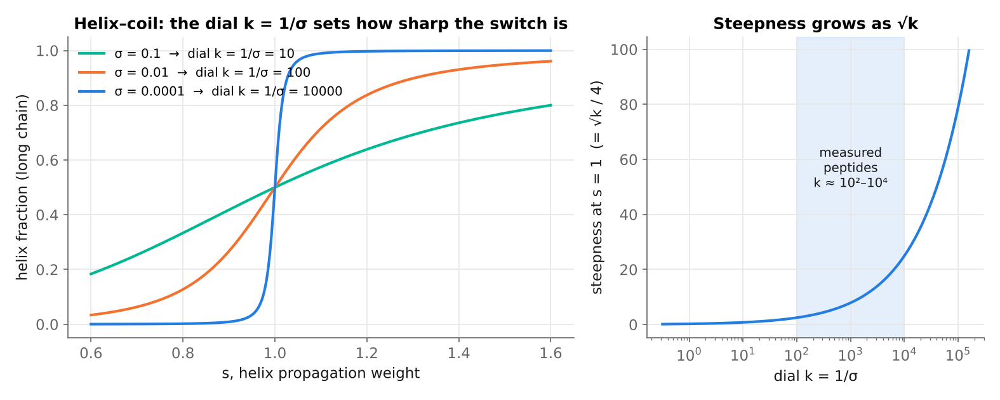
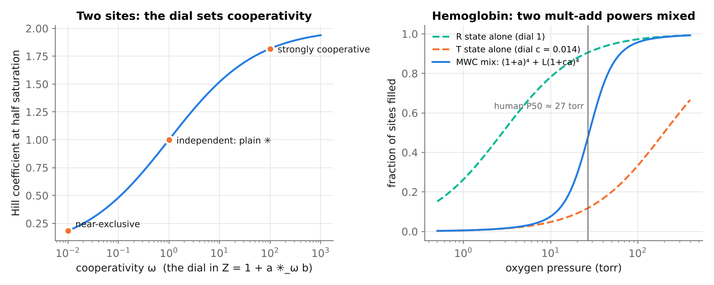
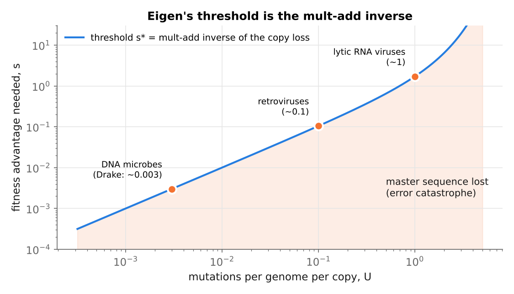

Biology through the circle operation ∘₁ (called mult-add before 1.0)
Relabel the two states of the classic helix–coil model and its transfer matrix is exactly the dial gas from the Lee–Yang page, with dial k = 1/σ. Peptide experiments put σ between about 10⁻² and 10⁻⁴, so nature runs this dial at k ≈ 100 to 10,000. Binding cooperativity, hemoglobin and copying fidelity are the circle operation too, but those are tidy readings of known results.

Known or new. Every result here is known science. The Zimm–Bragg helix–coil model (1959) is a one-dimensional Ising model, which physicists have long known; the two-site binding polynomial with an interaction factor is Adair's and Koshland's; the MWC model is from 1965; Eigen's error threshold is from 1971 and Drake's rule from 1991. What this page adds is the placement: each of them sits on the same dial, and the helix–coil model sits on it exactly, as the Lee–Yang page's dial gas.
Is there a lead worth following? A small one. Because helix–coil is the dial gas exactly, every helix–coil melting experiment is a measurement of the dial k. That gives the dial pages something they have not had: real measured values, k ≈ 10² to 10⁴ for peptides. The Lee–Yang page's special dial values (1.618, 2, 2.247 and up to 3) would correspond to σ between about 0.33 and 0.62, a weakly cooperative chain that ordinary peptides are not. So it is worth following only if a system with weak nucleation can be found and measured; it does not yet predict anything new. The other three places are clean readings of known results, useful as glue and not as leads.
In the Zimm–Bragg model each residue of a chain is helix or coil. A helix residue weighs s, the first helix residue after a coil weighs σ·s (the cost of starting a helix), and a coil weighs 1. The chain's partition function is a product of 2×2 transfer matrices. Swap the order of the two states and the matrix becomes the dial gas of the Lee–Yang page:
I checked the two ring partition functions agree on 200 random choices of s, σ and chain length (largest relative difference 8×10⁻¹⁵), and that the matrix product matches a brute-force sum over every chain up to 12 residues. Lean proves the identity for any commutative ring once k·σ = 1.
The wall carries over. The dial gas's odd rings vanish exactly where 1 + k·z = 0, and here that is s = −1, for every σ. Lean proves it; numerically every odd ring is exactly 0 there and even rings are not. s = −1 is not a physical temperature, so this is a fact about the algebra, the same one the Lee–Yang page found.
What the dial does physically: the larger k, the sharper the switch from coil to helix. The slope of the helix fraction at the midpoint is √k/4. Strongly cooperative chains (σ = 10⁻⁴, k = 10,000) switch over a few percent change in s.
A protein with two sites for a ligand has binding polynomial Z = 1 + a + b + ω·ab, where a and b are the two sites' weights and ω says how filling one site changes the other. That is the dial exactly:
ω = 1 means independent sites and Z factors as (1 + a)(1 + b), the plain circle operation. ω = 0 means only one site can be filled, plain addition. ω above 1 is positive cooperativity. For identical sites the Hill coefficient at half saturation is 2√ω/(1 + √ω), reaching half saturation at a = 1/√ω (checked at four values of ω to 10⁻⁶). The deviation from independence is exactly (ω − 1) times the corner cell ab, which Lean proves.

In the MWC model a four-site protein flips between a relaxed state R and a tense state T. Its binding polynomial is (1 + a)⁴ + L(1 + c·a)⁴. The first term is the plain circle power lifted, 1 + a✳4; the second is the circle power at dial c, 1 + c·a✳c4. With the textbook fit this gives a half-saturation pressure of 27.7 torr (human blood is about 27) and a Hill coefficient of 2.85 (the fitted Hill value is 2.8). Push L to 0 or to infinity, leaving one state only, and the Hill coefficient drops to exactly 1. Cooperativity in this model comes only from mixing two dial settings.
A copying mistake survives only if every check misses it. So the chance a mistake is caught combines by the circle operation at dial −1, the "or" law from the statistics page: catch = c₁ ✳−1 c₂ ✳−1 c₃. With textbook orders of magnitude for base selection (10⁻⁵), proofreading (10⁻²) and mismatch repair (10⁻³), the survivors are exactly 10⁻¹⁰ per base (checked in exact fractions).
Eigen's error threshold is the cleaner find. A master genome of L bases copies itself perfectly with chance (1 − μ)L = 1 + (−μ)✳L, so its copy loss is l = (−μ)✳L, a circle power. If the master out-reproduces its mutants by an advantage s, its excess growth is exactly s ✳ l. It holds its own when s ✳ l = 0, which is when s is the circle inverse of l:

Drake's numbers place the three kinds of genome on this curve. DNA microbes need only a 0.3% edge to keep their master sequence. Lytic RNA viruses, at about one mutation per genome per copy, need the master to out-reproduce its mutants by a factor of e ≈ 2.72, which is why they are said to live near the error threshold. Lean proves the threshold statement on any field, away from the wall 1 + l = 0 (where the master never copies itself at all).
| Place | What the circle operation does there | Known since | Verdict |
|---|---|---|---|
| Helix–coil (Zimm–Bragg) | Exactly the dial gas, k = 1/σ; odd rings vanish on the wall s = −1 | Zimm and Bragg 1959; Ising equivalence long known | Small lead: measured dial values |
| Two binding sites | Z = 1 + a ✳ω b; cooperativity ω is the dial; Hill coefficient 2√ω/(1+√ω) | Adair 1925; Koshland, Némethy and Filmer 1966 | Tidy, known |
| Hemoglobin (MWC) | Sum of two circle powers, dial 1 and dial c; cooperativity only from the mix | Monod, Wyman and Changeux 1965 | Tidy, known |
| Proofreading stages | Catches combine by the 'or' law, dial −1 | Textbook | Tidy, known |
| Eigen's error threshold | Threshold advantage is the circle inverse of the copy loss | Eigen 1971; Drake 1991 | Clean reading, known |
File biology/01-molecular/lean/MolecularBiology.lean, core Lean 4.37 with no mathlib, built on the shared library's base and using ✳ for the circle operation. Every theorem uses only Lean's standard axioms. It goes into the shared proof library as FusedAlgebra/Topics/Biology/MolecularBiology.lean.
bind2_excess, bind2_exclusive, bind2_half, bind2_independent, bind2_independent', bind2_is_circK, bind2_wall, catch_three, catch_two, copy_loss, eigen_excess, eigen_threshold, mwc_R, mwc_T, mwc_c_one, mwc_poly, star_def, swap_mul, swap_one, swap_pow, tr_swap, zb_det, zb_free, zb_is_dial_gas, zb_odd_ring_wall, zb_ring_eq_dial_ring, zb_ring_relabel, zb_tr
Numeric checks: 30 of 30 pass, from checks.py beside this page.
The σ range (10⁻² to 10⁻⁴) is the usual textbook span for peptides and polypeptides; I did not open Scholtz and Baldwin's 1991 paper for their exact alanine value. The proofreading orders of magnitude are textbook values used without a page opened.